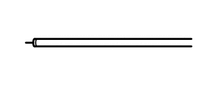
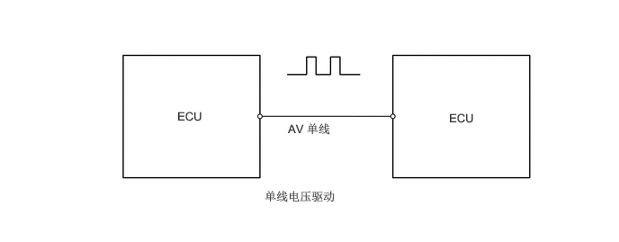
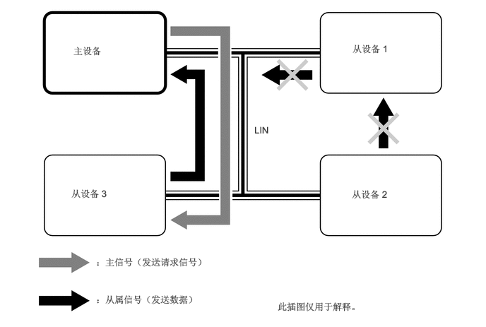

概要
局域互联网 (LIN) 通信实现了低成本多路通信，可用作多路通信系统* 来简化车辆线束和实现高速通信。
*：多路通信系统使用一条通信线路连接几个 ECU，以便彼此交换数据。因此，在集成系统和添加功能时无需增加配线。
| 协议 | 规格 |
|---|---|
| 通信速度 | 19.2 kbps |
| 通信线束 | AV 单线 |
| 驱动类型 | 单线电压驱动 |
| 数据长度 | 2、4、8 字节（可变） |
通信线束
LIN 通信采用车用乙烯 (AV) 单线。
| 通信线束 | 概要 | |
|---|---|---|
| AV 单线 |  |
这是一种轻量化单线通信线束，由包裹了绝缘层的单芯线构成。将电压施加到这根线上来驱动通信，该系统称为“单线电压驱动”。 |

LIN 通信协议（通信规则）
LIN 通信系统可通过使各设备使用通信线路的时间发生偏差来发送数据，以使构成网络的所有部分共用一条通信线路。因此，通信要根据各 ECU 共用的通信协议（通信规则）进行。此通信协议有助于平稳安全地进行通信。
LIN 通信包括由一个主设备（控制侧）和多个从设备（受控侧）构成的网络，使用主设备控制从设备的主/从系统（单主系统）*。
*：主/从系统（单主系统）使用主设备管理从设备发送信息的时间，以防多个从设备同时通过通信线路发送信息，从而实现平稳、安全的数据传输。
如果从设备无法接收到来自主设备的发送请求，则该从设备无法向其他从设备发送数据。

LIN 通信是供不同系统使用的多路通信网络，主要目的是在车身控制 ECU 之间发送数据。
通过 LIN 通信发送和接收的信号通过连接至 CAN 总线的 ECU 发送至 CAN 总线。
LIN 通信网络
LIN 通信系统由智能上车和起动系统、电动车窗系统、滑动天窗系统或全景天窗系统、空调系统和前刮水器系统组成。
可连接诊断工具以执行诊断通信。有关详情，请参阅《修理手册》。